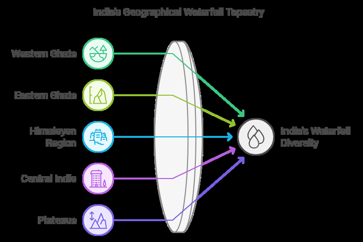

11 Waterfalls In India
Waterfalls In India
Waterfalls are one of the most mesmerizing natural wonders found across the world, and India, with its diverse topography, is home to many stunning waterfalls. From the hills and mountains in the north to the plateau and forests in the south, waterfalls in India create picturesque landscapes and are often popular tourist destinations. These cascading waters are not only a visual delight but also play significant roles in local ecosystems, providing water for agriculture, drinking, and recreational activities.
India’s waterfalls vary in height, size, and the rivers from which they originate. Some are located in the deep forests, offering seclusion, while others are easily accessible, attracting a large number of visitors. The waterfalls also vary in terms of geographical features, including tiered, plunge, or segmented waterfalls. Many are linked to local legends and history, further adding to their cultural significance.
India is home to numerous waterfalls scattered across its different states. Here are a few key features:

Geographical Diversity:
Significant Waterfalls: Dudhsagar Falls (Goa-Karnataka): One of the tallest waterfalls in India, Dudhsagar is known for its massive water flow during the monsoon season. Nohkalikai Falls (Meghalaya): Located in the Khasi Hills, it is the tallest waterfall in India, plunging 1,100 feet. Athirappilly Falls (Kerala): Often called the "Niagara of India," it is Kerala's largest waterfall and a popular tourist spot.
Highest Waterfall Waterfall: Kunchikal Falls River: Varahi River Fact: Located in Karnataka, Kunchikal Falls has a height of 455 meters (1,493 feet).
Smallest Waterfall Waterfall: Palaruvi Falls River: Kallada River Fact: Located in Kerala, Palaruvi Falls is about 91 meters (299 feet) tall, making it relatively small compared to others in India.
Largest Volume of Water Waterfall: Jog Falls River: Sharavathi River Fact: Located in Karnataka, it is a segmented waterfall with a height of 253 meters (830 feet).
Waterfalls List
| Waterfall | Location | River |
|---|---|---|
| Kunchikal Falls | Shimoga district, Karnataka | Swarna River |
| Barehipani Falls | Mayurbhanj district, Odisha | Budhabalanga River |
| Nohkalikai Falls | East Khasi Hills district, Meghalaya | Nohkalikai River |
| Nohsngithiang Falls / Mawsmai Falls | East Khasi Hills district, Meghalaya | Nohsngithiang River |
| Dudhsagar Falls | Karnataka and Goa | Mandovi River |
| Kynrem Falls | East Khasi Hills district, Meghalaya | Kynrem River |
|---|---|---|
| Meenmutty Falls | Wayanad district, Kerala | Chaliyar River |
| Thalaiyar Falls | Batlagundu, Dindigul district, Tamil Nadu | Pambar River |
| Vajrai Falls | Satara district, Maharashtra | Koyna River |
| Barkana Falls | Shimoga district, Karnataka | Seeta River |
| Jog Falls | Shimoga district, Karnataka | Sharavati River |
| Khandadhar Falls | Kendujhar district & Sundergarh district, Odisha | Khandadhar River |
| Vantawng Falls | Serchhip district, Mizoram | Lauai River |
| Kune Falls | Pune district, Maharashtra | Kune River |
| Soochipara Falls | Wayanad district, Kerala | Chaliyar River |
| Thoseghar Waterfalls | Satara district, Maharashtra | Thoseghar River |
| Magod Falls | Uttara Kannada district, Karnataka | Bedthi River |
| Joranda Falls | Mayurbhanj district, Odisha | Budhabalanga River |
| Hebbe Falls | Chikkamagaluru district, Karnataka | Bhadra River |
| Duduma Falls | Border of Koraput (Odisha) and Visakhapatnam (Andhra Pradesh) | Machkund River |
| Palani Falls | Kullu district, Himachal Pradesh | Beas River |
| Lodh Falls | Latehar district, Jharkhand | Sona River |
| Bahuti Falls | Mauganj, Rewa district, Madhya Pradesh | Narmada River |
| Bishop Falls | East Khasi Hills district, Meghalaya | Bishop River |
| Chachai Falls | Rewa district, Madhya Pradesh | Tamas River |
| Keoti Falls | Rewa district, Madhya Pradesh | Tamas River |
| Kalhatti Falls | Chikkamagaluru district, Karnataka | Bhadra River |
| Beadon Falls | East Khasi Hills district, | Beadon River |
| Meghalaya | ||
|---|---|---|
| Keppa Falls | Uttara Kannada district, Karnataka | Keppa River |
| Koosalli Falls | Udupi, Karnataka | Koosalli River |
| Dabbe Falls | Shivamogga, Sagar, Karnataka | Sharavati River |
| Pandavgad Falls | Thane, Maharashtra | Vaitarna River |
| Rajat Prapat | Hoshangabad district, Madhya Pradesh | Tawa River |
| Bundla Falls | Kaimur district, Bihar | Burhi Gandak River |
| Vantawng Falls | Serchhip district, Mizoram | Lauai River |
| Shivanasamudra Falls | Chamarajanagar District, Karnataka | Kaveri River |
| Lower Ghaghri Falls | Latehar district, Jharkhand | Ghaghri River |
| Hundru Falls | Ranchi district, Jharkhand | Subarnarekha River |
| Sweet Falls | East Khasi Hills district, Meghalaya | Sweet River |
| Agaya Gangai | Namakkal, Tamil Nadu | Agaya Gangai River |
| Gatha Falls | Panna district, Madhya Pradesh | Ken River |
| Teerathgarh Falls | Bastar district, Chhattisgarh | Teerathgarh River |
| Kiliyur Falls | Yercaud, Tamil Nadu | Kiliyur River |
| Kudumari Falls | Udupi district, Karnataka | Kudumari River |
| Muthyala Maduvu Falls | Bangalore rural district, Karnataka | Arkavathy River |
| Tirathgarh Falls | Bastar district, Chhattisgarh | Teerathgarh River |
| Langshiang Falls | West Khasi Hills district, Meghalaya | Langshiang River |
| Talakona Falls | Chittoor district, Andhra Pradesh | Talakona River |
| Kakolat Falls | Nawada district, Bihar | Kakolat River |
| Athirappilly Falls | Thrissur district, Kerala | Chalakudy River |